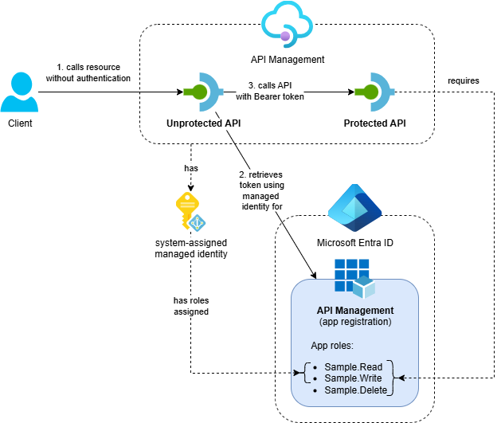
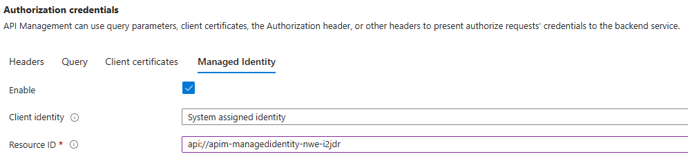
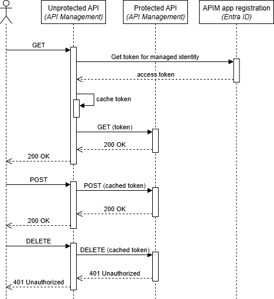

Call OAuth-Protected APIs with Managed Identity from API Management

In my previous posts I showed how to call OAuth-protected APIs from .NET and Logic Apps using managed identity. This post demonstrates how to call OAuth-protected APIs from within API Management policies using the system-assigned managed identity.
This post is part of a series about OAuth and API Management:
- Protect APIs in Azure API Management with OAuth
- Calling OAuth-Protected APIs with Managed Identity
- Part 1: In .NET (Azure Function)
- Part 2: In Logic Apps (Standard)
- Part 3: In API Management - this post
- Calling OAuth-Protected Backends from API Management - coming later
- Part 1: With Credential Manager
- Part 2: With Client Secret
- Part 3: With Client Certificate
API Management provides several use cases for calling OAuth-protected APIs with managed identity. For example:
- Proxy API calls: Acting as a proxy to forward requests to OAuth-protected APIs
- API composition and privilege delegation: Creating composite APIs where the client has access to one API but needs data from another protected API. The managed identity acts as a privileged service account, allowing API Management to access resources on behalf of the client without exposing additional permissions to the original caller.
In this post, I’ll show you how to use managed identity in API Management to securely call OAuth-protected APIs.
Table of Contents
Solution Overview
The solution demonstrates API Management calling protected APIs using its system-assigned managed identity:

- Azure API Management service with two APIs:
- Protected API: A backend API that’s protected with OAuth using Entra ID
- Unprotected API: A public API that calls the protected API using API Management’s system-assigned managed identity
- Entra ID App Registration: Represents the protected APIs in API Management and defines available app roles
- Supporting Resources: Application Insights and Log Analytics workspace
While this example uses an API on API Management as the protected backend, you can use the same approach to call any API protected with OAuth via Entra ID.
The Entra ID configuration follows the same pattern described in Protect APIs in Azure API Management with OAuth. The key difference is that we assign the Sample.Read and Sample.Write app roles to API Management’s system-assigned managed identity instead of client app registrations.
I’ve created an Azure Developer CLI (azd) template called Call API Management with Managed Identity that demonstrates three scenarios: .NET Azure Functions, Logic Apps and API Management calling protected APIs. If you want to deploy and try the solution, check out the getting started section for the prerequisites and deployment instructions. This post focuses on calling OAuth-protected APIs from API Management.
Implementation
API Management provides a built-in policy called authentication-managed-identity that simplifies OAuth authentication using managed identity. This policy automatically handles token acquisition, caching and renewal. For complete documentation, see Authenticate with managed identity.
Policy Configuration
The unprotected API uses a simple policy configuration to call the protected API with managed identity authentication. Here’s the inbound section from unprotected-api.xml:
<inbound>
<base />
<!-- Forward requests to the Protected API hosted on this API Management instance. -->
<set-backend-service backend-id="localhost" />
<rewrite-uri template="protected" />
<!-- Use the API Management system-assigned managed identity to get a JWT token. -->
<authentication-managed-identity resource="{{oauth-target-resource}}" />
</inbound>
The policy does three main things:
set-backend-service: Uses thelocalhostbackend to route requests within the same API Management instancerewrite-uri: Rewrites the URI to target theprotectedAPI pathauthentication-managed-identity: Automatically obtains an OAuth token using API Management’s system-assigned managed identity and adds it to the Authorization header
The policy uses one named value:
oauth-target-resource: The Application ID URI of the Entra ID app registration representing the protected API (e.g.,api://apim-managedidentity-nwe-i2jdr)
Backend Configuration
The policy references a localhost backend that allows one API to call another API within the same API Management instance. This backend needs to be configured separately from the policy. Here’s the Bicep configuration used to create it:
resource localhostBackend 'Microsoft.ApiManagement/service/backends@2024-06-01-preview' = {
parent: apiManagementService
name: 'localhost'
properties: {
description: 'The localhost backend. Can be used to call other APIs hosted in the same API Management instance.'
// Note: This configuration uses the public gateway URL for the backend.
// For APIM instances running inside a VNet, you would typically use https://localhost as the backend URL.
url: apiManagementService.properties.gatewayUrl
protocol: 'http'
// Note: The Host header configuration is only necessary when the backend URL is set to https://localhost.
// For public gateway URLs, this configuration can be omitted.
credentials : {
header: {
Host: [ parseUri(apiManagementService.properties.gatewayUrl).host ]
}
}
tls: {
validateCertificateChain: true
validateCertificateName: true
}
}
}
This backend configuration:
- Creates a reusable backend: The
localhostbackend can be referenced by multiple policies within the same API Management instance - Uses the public gateway URL: Points to the API Management gateway URL for external-facing instances. For APIM instances running inside a VNet, you would typically use
https://localhostas the backend URL instead - Configures proper headers: Sets the Host header to ensure requests are routed correctly. This Host header configuration is only necessary when the backend URL is set to
https://localhost- for public gateway URLs, this configuration can be omitted
Using a backend instead of directly specifying the URL in policies provides better maintainability and reusability across multiple operations and APIs.
Note: When using a backend in API Management, you can actually configure managed identity for authorization credentials through the Azure Portal, as shown in the configuration below:

However, at this moment in time, it’s not possible to deploy this using Bicep as it is not part of the Microsoft.ApiManagement service/backends resource definition.
Testing the Implementation
After deploying the solution, you can test the OAuth-protected API calls using different HTTP methods. Here’s a sequence diagram showing the complete flow:

The flow demonstrates how API Management:
- Receives a request on the unprotected API
- Uses the
authentication-managed-identitypolicy to obtain an access token - Forwards the request to the protected API with the token
- Caches the token for subsequent requests to improve performance
You can test the implementation with the following requests using any HTTP client. For example, you can use the REST Client extension for VS Code. Replace <your-api-management-service-name> with the actual name of your API Management service:
#=============================================================================
# Test requests for the Unprotected API on API Management
#=============================================================================
# Replace <your-api-management-service-name> with your actual API Management service name
@apimHostname = <your-api-management-service-name>.azure-api.net
# Call GET on Unprotected API
GET https://{{apimHostname}}/unprotected HTTP/1.1
###
# Call POST on Unprotected API
POST https://{{apimHostname}}/unprotected HTTP/1.1
###
# Call DELETE on Unprotected API (should return 401 Unauthorized because managed identity does not have the Sample.Delete permission)
DELETE https://{{apimHostname}}/unprotected HTTP/1.1
###
The expected results are:
- GET request: Should succeed (200 OK) - the protected API requires
Sample.Readrole - POST request: Should succeed (200 OK) - the protected API requires
Sample.Writerole - DELETE request: Should fail (401 Unauthorized) - the protected API requires
Sample.Deleterole which is not assigned to the managed identity
API Management automatically handles access token caching and renewal. If you execute the GET and POST requests multiple times, you’ll notice that the IssuedAt value in the response doesn’t change initially, showing that the platform caches tokens for improved performance.
Conclusion
API Management’s authentication-managed-identity policy provides a simple way to call OAuth-protected APIs using managed identity authentication. The key benefits of this approach include:
- Zero secret management: System-assigned managed identity eliminates the need to store and rotate client secrets
- Built-in token management: The platform handles token acquisition, caching and renewal automatically
- Simple policy configuration: Authentication is configured through a single policy element
This approach works with any OAuth-protected API that supports Entra ID authentication, whether the API is hosted within the same API Management instance or externally. This makes it a versatile solution for secure API-to-API communication in Azure Integration Services architectures.